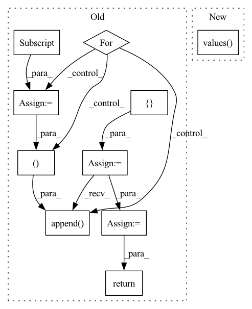

Pattern ID :41470
Before Change
lengths_list: List[int] = self.lengths().tolist()
N = max(lengths_list) if desired_length is None else desired_length
offset = 0
values = []
for length in lengths_list:
value = self.values()[offset : offset + length]
if length <= N:
padding_tensor = torch.full(
[N - length], padding_value, device=self.values().device
)
value = (
torch.cat((padding_tensor, value), 0)
if pad_from_beginning
else torch.cat((value, padding_tensor ), 0)
)
else:
value = value[-N:] if chop_from_beginning else value[:N]
values.append( value)
offset += length
final_tensor = torch.stack(values)
return final_tensor
def lengths(self) -> torch.Tensor:
_lengths = _maybe_compute_lengths(self._lengths, self._offsets)After Change
lengths_list: List[int] = self.lengths().tolist()
N = max(lengths_list) if desired_length is None else desired_length
return torch.ops.fbgemm.jagged_to_padded_dense(
self.values() , [self.offsets()], [N], padding_value
)
def lengths(self) -> torch.Tensor:In pattern: SUPERPATTERN
Frequency: 3
Non-data size: 10
Instances Fragment ID: 116572609
Project Name: pytorch/torchrec
Commit Name: 52ddfd407a0e505682a053007893b3c24a158afa
Time: 2022-06-15
Author: joshuadeng@fb.com
File Name: torchrec/sparse/jagged_tensor.py
M Class Name: JaggedTensor
N Class Name: JaggedTensor
M Method Name: to_padded_dense(3)
N Method Name: to_padded_dense(5)
M Parent Class: Pipelineable
N Parent Class: Pipelineable
M File Name: torchrec/sparse/jagged_tensor.py
N File Name: torchrec/sparse/jagged_tensor.py
M Start Line: 321
M End Line: 378
N Start Line: 360
N End Line: 363
Before Change
lengths_list: List[int] = self.lengths().tolist()
N = max(lengths_list) if desired_length is None else desired_length
offset = 0
values = []
for length in lengths_list:
value = self.values()[offset : offset + length]
if length <= N:
padding_tensor = torch.full(
[N - length], padding_value, device=self.values().device
)
value = (
torch.cat((padding_tensor, value), 0)
if pad_from_beginning
else torch.cat((value, padding_tensor ), 0)
)
else:
value = value[-N:] if chop_from_beginning else value[:N]
values.append( value)
offset += length
final_tensor = torch.stack(values)
return final_tensor
def lengths(self) -> torch.Tensor:
_lengths = _maybe_compute_lengths(self._lengths, self._offsets)After Change
lengths_list: List[int] = self.lengths().tolist()
N = max(lengths_list) if desired_length is None else desired_length
return torch.ops.fbgemm.jagged_to_padded_dense(
self.values() , [self.offsets()], [N], padding_value
)
def lengths(self) -> torch.Tensor: Fragment ID: 116572613
Project Name: facebookresearch/torchrec
Commit Name: 52ddfd407a0e505682a053007893b3c24a158afa
Time: 2022-06-15
Author: joshuadeng@fb.com
File Name: torchrec/sparse/jagged_tensor.py
M Class Name: JaggedTensor
N Class Name: JaggedTensor
M Method Name: to_padded_dense(3)
N Method Name: to_padded_dense(5)
M Parent Class: Pipelineable
N Parent Class: Pipelineable
M File Name: torchrec/sparse/jagged_tensor.py
N File Name: torchrec/sparse/jagged_tensor.py
M Start Line: 321
M End Line: 378
N Start Line: 360
N End Line: 363
Before Change
max_test = self.tc.latest_time(latest_records)
calendar_latest = self.ta.last_date()
if self.ta.cal_interval(calendar_latest, max_test[0]) > self.rg.step:
old_tasks = []
for rid, rec in latest_records.items():
task = self.tc.get_task(rec)
test_begin = task["dataset"]["kwargs"]["segments"]["test"][0]
// modify the test segment to generate new tasks
task["dataset"]["kwargs"]["segments"]["test"] = (test_begin, calendar_latest )
old_tasks.append( task)
new_tasks = task_generator(old_tasks, self.rg)
self.tm.create_task(new_tasks)
run_task(task_train, self.tm.task_pool, experiment_name=self.exp_name)
self.logger.info(f"Finished prepare {len(new_tasks)} new models.")
return new_tasks
self.logger.info("No need to prepare any new models.")
return []
After Change
prepare(train) new models based on online model
run_task(task_train, self.tm.task_pool, experiment_name=self.exp_name)
latest_records, _ = self.list_latest_recorders()
self.set_online_tag(OnlineManager.NEXT_ONLINE_TAG, latest_records.values() )
self.logger.info(f"Finished prepare {len(latest_records)} new models and set them to next_online.")
def list_latest_recorders(self, rec_filter_func=None): Fragment ID: 116572607
Project Name: microsoft/qlib
Commit Name: 46cd57688e0c9229067fd028396ecc66cf40a0c0
Time: 2021-03-25
Author: lzh222333@163.com
File Name: qlib/workflow/task/online.py
M Class Name: RollingOnlineManager
N Class Name: RollingOnlineManager
M Method Name: prepare_new_models(1)
N Method Name: prepare_new_models(1)
M Parent Class: OnlineManagerR
N Parent Class: OnlineManager
M File Name: qlib/workflow/task/online.py
N File Name: qlib/workflow/task/online.py
M Start Line: 128
M End Line: 145
N Start Line: 128
N End Line: 130